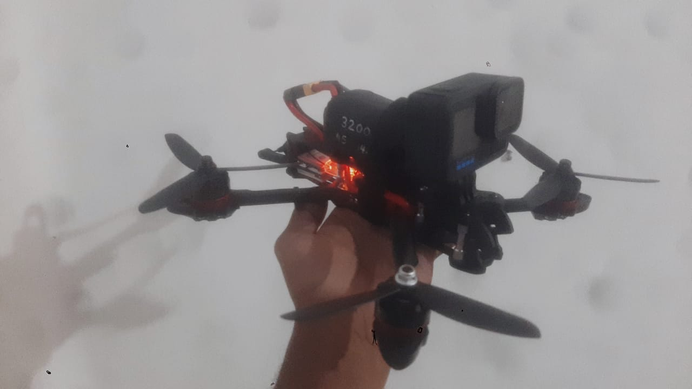

10-inch FPV platform — used as the flight-test bed for the custom H743 firmware work.
FPV Platforms
10-inch · Custom build
Assembled from a Mark 4 10-inch frame and integrated with my own flight-controller work. Used as the primary test platform for the H743 Betaflight port and the GX Telemetry Engine.
- 10-inch propeller class — larger platform for stability and payload margin
- Flight-controller integration, ESC wiring, and radio link setup
- Custom 4S3P Li-ion pack built for this platform
- Flight-validated through the GX Telemetry Engine (PID tracking, spectral analysis, sensor-fused trajectory)
10-inch platform — custom H743 FC, custom battery pack, validated through post-flight telemetry.
5-inch · Reference build
Built from a Mark 4 5-inch kit as a reference platform. Every component in the electronics stack is standard kit hardware — the value here is having a known-good baseline to compare custom builds against, and a smaller, safer platform for early firmware testing.
- Standard Mark 4 5-inch kit — unmodified electronics stack
- Reference baseline for validating custom flight-controller work
- Smaller and lighter for early-stage flight testing

5-inch reference platform — kit-built, used as a baseline for comparison.